Current Lab Members
Graduate Students
Undergraduate Students
Lab Alumni (Where they are now)
Attending the University of California, Davis as a Ph.D. Candidate
2025 Poster and Abstract on “Determining the Role of L-Plastin in Tunneling Nanotube Formation” at the CSU Biotechnology Symposium.
2025 Poster and Oral Presentation on “Exploring the Role of L-plastin in the Formation of Tunneling Nanotubes.” at the Central California Research Symposium; won UCSF Outstanding Graduate Oral Presentation.
2024 CCRS Poster and Oral Presentation on “Analyzing the Role of L-Plastin in the Formation of Tunneling Nanotubes” at the Central California Research Symposium; won UCSF Honorable Mention Graduate Oral Presentation.
2024/2025 CSU Fresno, Department of Biology Outstanding Thesis Award Winner
Associate Researcher, 1Cell.Ai Inc.
2024 Poster and Oral Presentation on “Role of Lactate Dehydrogenase B in the formation of tunneling Nanotubes (TNTs)” at the Central California Research Symposium.
2024 Poster and Oral Presentation on “Effect of Fixation on Immunofluorescence” at the Central California Research Symposium; won an Honorable Mention for her oral presentation.
NSF LSAMP Scholar.
Attending UCSF School of Medicine.
2024 Poster and Oral Presentation on “Characterization of the Transcriptomes of Specific Subtypes of Cellular Protrusions Isolated by Laser Capture Microdissection” at the Central California Research Symposium; won an Honorable Mention for her oral presentation.
Emergency Medicine Scribe, UCSF Fresno
Research Associate II, Nitto BioPharma
Scientist (Protein Expression and Purification), Evotec
Research Associate, Immuno-epigenetics (Co-op), Moderna
2022/2023 FSSRA Award winner.
Bioscience Account Manager III, Thermo Fisher Scientific
2018/2019 FSSRA Award winner.
Fresno State/UC Davis Bridges to Doctorate Program
2023 Poster and Abstract on “Exploring the Role of Protein-X in Tunneling Nanotube Formation” at the CSU Biotechnology Symposium.
2022 Poster and Oral Presentation on “Exploring the Role of Protein-X in Tunneling Nanotube Formation” at the Central California Research Symposium.
Attending the Arizona State University as a Ph.D. Candidate
2022 Poster and Oral Presentation on “How does the expression of Protein X influence Tunneling Nanotube formation in neuronal cells?” at the Central California Research Symposium.
Product Applications Specialist III, Thermo Fisher Scientific
Product Applications Specialist II, Thermo Fisher Scientific
2021 Poster and Oral Presentation on “Antimycin A Leads to the Upregulation of Myo10 and Tunneling Nanotube Formation” at the Central California Research Symposium.
Attending UCSF School of Medicine.
2019 ASCB Poster and Abstract for “Physiological Concentrations of Hydrogen Peroxide and Glutamate, Induce Tunneling Nanotube Formation in Hela and Cad Cells.”
2019 Poster and Oral Presentation on “Do Physiological Concentration Of Hydrogen Peroxide And Glutamate Affect The Expression Of Myosin X In Cancer Cells?” at the Central California Research Symposium.
Biology Instructor, Reedley College
Attending the University of California, Riverside as a Ph.D. Candidate
2020 Poster and Oral Presentation on “The Role of CD7 Protein in Tunneling Nanotube Formation” at the Central California Research Symposium.
2019/2020 FSSRA Award winner for “The importance of the mitochondria in TNT formation and function.”
2019 ASCB Poster and Abstract for “Physiological Concentrations of Hydrogen Peroxide and Glutamate, Induce Tunneling Nanotube Formation in Hela and Cad Cells.”
Scientist I, Cytek BioScience, Fremont, CA.
2019 Poster and Oral Presentation on “The Role Of Mitochondrial Dna In Tunneling Nanotubes Formation In Rho Cells” at the Central California Research Symposium.
2017/2018 FSSRA Award winner for “The importance of the mitochondria in TNT formation and function.”
2017/2018 Graduate Net Initiative Award winner for “CRISPR/Cas9-mediated fluorescent tagging of endogenous Myosin-X in a stable neuronal cell line.”
Attending Washington University in St. Louis as a Ph.D. candidate.
Attended University of Utah as a Ph.D. candidate.
2020 Poster and Oral Presentation on “The Effect of Hydrogen Peroxide and Glutamate on Myosin-X expression and TNT Formation.” at the Central California Research Symposium.
2019 ASCB Poster and Abstract for “Physiological Concentrations of Hydrogen Peroxide and Glutamate, Induce Tunneling Nanotube Formation in Hela and Cad Cells.”
2019 Poster and Oral Presentation on “Physiological Concentrations Of Hydrogen Peroxide And Glutamate, Induce Tunneling Nanotube Formation In Hela Cells” at the Central California Research Symposium; won Honorable Mention Oral Presentation.
2018/2019 FSSRA Award winner.
Physician Assistant, Inspire Health Mdical Group, Fresno, CA.
2018/2019 FSSRA Award winner.
Graduated SUNY Upstate Medical University CLS
2018 Poster and Oral Presentation on “Fluorescence In Situ Hybridization (FISH) to Study the Role of Myo10 in TNTs” at the Central California Research Symposium.
2018/2019 FSSRA Award winner.
2017/2018, 2016/2017 Graduate Net Initiative Award winner for “CRISPR/Cas9-mediated fluorescent tagging of endogenous Myosin-X in a stable neuronal cell line.”
2017/2018 and 2016/2017 FSSRA Award winner.
Program Supervisor, Think Togehter, Sacramento, CA.
Attended the University of California, Davis as a Ph.D. Candidate
NSF LSAMP Scholar.
Graduated Kaiser Permanente Bernard J. Tyson School of Medicine.
2018/2019 FSSRA Award winner.
Software Engineer, Atlassian
Graduated from Stanford University with a B.S. in Computer Science
2018 ASCB Poster and Abstract for “The proteolysis of Myo10, by Calpain, under low calcium conditions is activated by its FERM domain Acyl-CoA Binding Protein Motif.”
Attending University of Texas at Austin as a Ph.D. candidate.
Staff Research Associate I, Lab of Dr. Daniele Piomelli, UC Irvine, CA.
2017/2018 FSSRA Award winner for “Development of Pichia pastoris as a model system for Myosin X-induced filopodia formation.”
2017 CCRS Poster and Abstract, 2016 ASCB Poster and Abstract, 2016 CSU Biotechnology Symposium Poster and Abstract, and 2016 CSUPERB Presidents’ Commission Scholars Award winner.
2016/17 CSU Fresno Undergraduate Research Awardee.
Graduated from UC Davis School of Medicine.
2017 CCRS Poster and Abstract for “Interaction of Myosin-X with mRNP Complexes.”
2016/17 CSU Fresno Undergraduate Research Awardee for “Interactions of Myosin-X with nuclear and mRNP complex proteins.”
Fundación Martín Escudero (Spain) Post-Doctoral Fellow, 2016–2018.
Scientist I, AbbVie
Associate Scientist II, AbbVie
2013/2014 FSSRA Award winner for “The formation of TNTs in macrophages.”
I3 Institute Scholar, University of Pittsburgh School of Information Sciences.
Quality Assurance Manager/Project Manager, Twin Arbor Labs
Adjunct Faculty, Allan Hancock College
Adjunct Faculty Instructor, Reedley College
Attending the University of Illinois College of Law.
Graduated from Penn State University.
Post Baccalaureate Program, CSU East Bay.
NSF LSAMP Scholar.
Senior Manager, Guardant Health, San Marcos, CA.
Senior Clinical Trial Manager, Guardant Health, San Marcos, CA.
Clinical Trial Manager, Guardant Health, San Marcos, CA.
Senior Clinical Research Associate, Thermo Fisher Scientific, Carlsbad, CA.
Scientist III, Molecular Biology, Thermo Fisher Scientific, Carlsbad, CA.
Scientist II, Molecular Biology, Thermo Fisher Scientific, Carlsbad, CA.
2015 CCRS Poster and Abstract, 2015 CSU Biotechnology Symposium Poster and Abstract, 2014/2015 FSSRA Award winner, 2014 CCRS Poster and Abstract, and 2013/2014 FSSRA Award winner for HIV-1 Nef/TNT-related projects.
Assistant Professor, Medicine, UCSF School of Medicine
Graduated from UCSF School of Medicine.
2015 CSU Fresno Department of Biology Outstanding Undergraduate Award.
2015 CCRS Poster and Abstract, 2015 CSU Biotechnology Symposium Poster and Abstract, 2014/2015 FSSRA Award winner, 2013/2014 FSSRA Award winner, and 2014 CSU Fresno Undergraduate Research Awardee for Myo10/FERM domain projects.
Attending UC Berkeley School of Law (JD expected May 2026)
Graduated UC Berkeley, B.A. in Public Health.
Switched to a Microbiology focused lab.
NIH CSU Fresno/UC Merced Bridges to Doctorate Program Scholar and NSF LSAMP Scholar.
2016/2017 FSSRA Award winner and 2016/17 CSU Fresno Undergraduate Research Awardee for HIV-1 Nef/TNT projects.
Senior Medical Writer, Avant Healthcare
Medical Writer, Avant Healthcare
Research Engineering/Scientist Associate I and Lab Manager, UT Texas at Austin
Research Engineering/Scientist Associate II and Lab Manager, UT Texas at Austin
Research Technician, Allergan
Graduated UC Irvine, M.S. in Biology.
2017 CCRS Poster and Abstract and 2016/17 CSU Fresno Undergraduate Research Awardee for Myosin-X projects.
Attending the University of Iowa as a Ph.D. Candidate
Research Associate, Dynavax, Berkeley, CA.
2016 ASCB Poster and Abstract, 2016 CCRS Poster and Abstract, 2016 CSU Biotechnology Symposium Poster and Abstract, 2015 Stanford University Mass Spectrometry Research Applications Symposium, and 2015 CCRS Poster and Abstract for microproteomics and Myo10 projects.
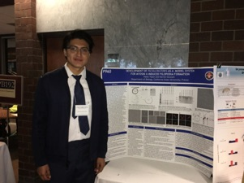
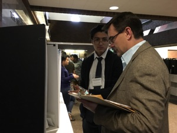
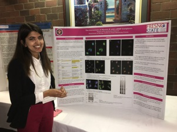
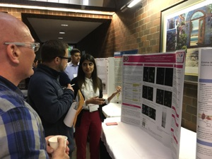
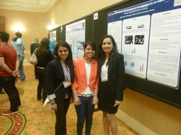
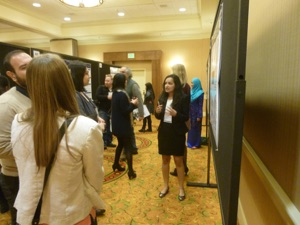
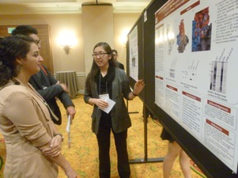
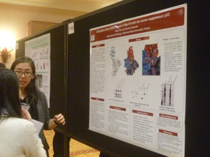
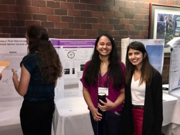
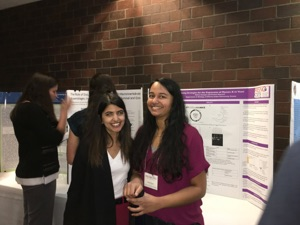
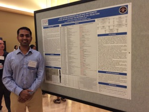
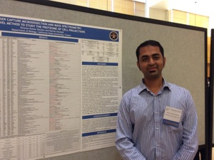
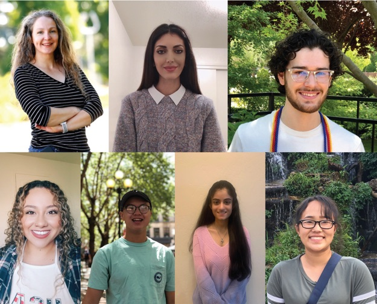
Fall 2020, from top left to bottom right: Dr. Gousset, Paria, Nicolas, Bridget, Alan, Vinita, Zoua.
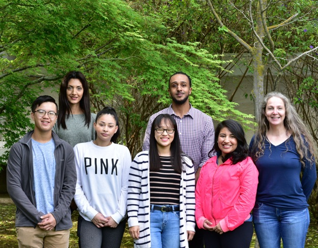
Fall 2018, from bottom left to top right: Alan, Andreina, Zoua, Abigail, Dr. Gousset, Paria, and Tariq.
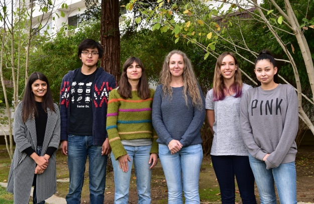
Fall 2017, from left to right: Puneet, Pablo, Dr. Ana Gordon, Dr. Gousset, Jaime, and Andreina.
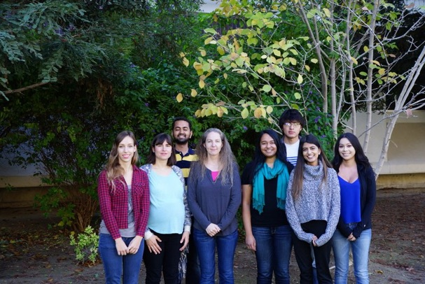
Fall 2016, from left to right: Jaime, Dr. Ana Gordon, Shravan, Dr. Gousset, Rekha, Pablo, Puneet, and Joselyn.
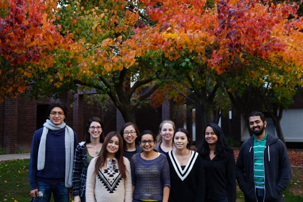
Fall 2015, from left to right: Pablo, Lee, Maria, Stacy, Shivalee, Dr. Gousset, Joselyn, Rekha, and Shravan.